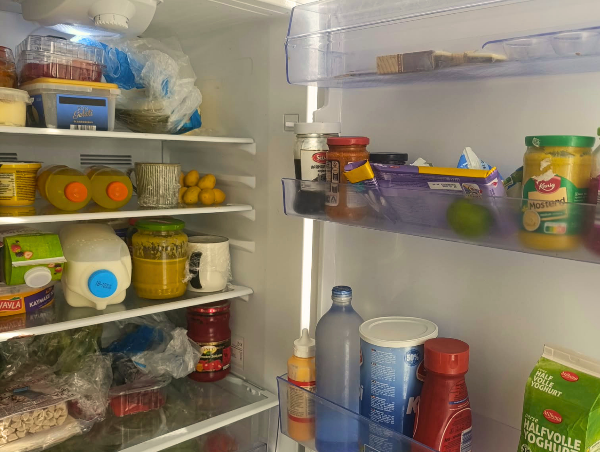

Food Storage
Food storage is important when you're a student because you will probably make more food than you can eat at once, or you may want to store food to eat later.
But if you don't store your food properly, it can spoil quickly and become unsafe to eat.
Fridge Storage

It depends on what you are storing. When we think about food storage, we often think that the fridge is the one and only choice.
However, some foods should be stored in the fridge, while others don't need to be refrigerated at all. It all depends on the ingredient. As a general rule, foods that spoil quickly, such as meat, fish, dairy products, and cooked leftovers, should be kept in the fridge.
But there is an important thing to remember: always cover your food before putting it into the fridge. The fridge is not a sterile environment, so covering your food helps protect it from contamination and prevents it from absorbing other food's smells. I would recommend using clean, airtight containers whenever possible.
Freezer

Sometimes we want to store food for longer than the fridge allows, and that's where the freezer becomes useful.
Freezing food helps it last much longer while keeping its quality for later. But how we do that.
- Make sure the food that you are storing sealed and covered
- Do not put hot or new cooked foods into freezer let it cool first
- Try to store food in smaller portions so you can take out only what you need later.